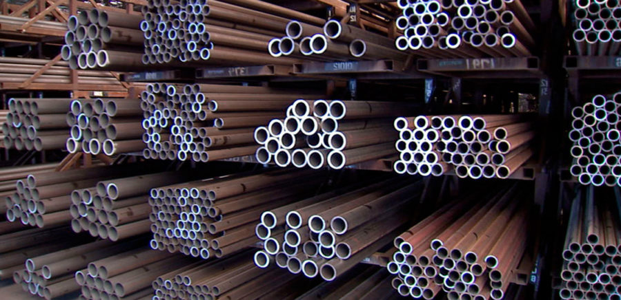

Как правильно выбирать металлопрокат?
Сфера применения металлопроката практически неограниченна. Сложно найти отрасль хозяйственной деятельности человека, где бы он ни использовался. Качественный металл используется, начиная от изготовления мелких деталей, заборов и заканчивая глобальным строительством: здания, стадионы, заводы и т. д. Именно поэтому очень важно, какого качества используется металлопрокат. Если, скажем, при строительстве здания бизнес-центра, к примеру, была куплена некачественная офисная мебель, то её можно заменить. Если же использован некачественный металлопрокат, это может привести к непоправимым, критическим последствиям.
Ассортимент металлопроката невообразимо велик. И как среди такого многообразия выбрать действительно стоящую продукцию, как не ошибиться с качеством? Намного проще выбрать любой строительный материал, например, банку краски. Но как убедиться в качестве стального круга или шестигранника? Прежде всего, нужен мониторинг рынка. При выборе поставщика металла необходимо обратить внимание на репутацию компании, сколько лет она на рынке, какой ассортимент она предоставляет. Покупать нужно только у проверенных, давно зарекомендовавших себя на рынке поставщиков, которые имеют ряд конкурентных преимуществ. Не нужно гнаться за слишком заниженной ценой. Иначе есть большой риск, что вам поставят некачественную продукцию, если вообще поставят. Так как цены на рынке в среднем одинаковые, фирмы, которые изначально занижают цены не будут продавать в убыток. Это означает, что они найдут возможность заработать на чем-то другом, например, обманув на весе, так как не у всех покупателей есть весы на приемке металлопроката. Слишком дорого тоже не значит качественно.
Необходима «золотая середина». Обязательно обращайте внимание на то, чтобы вам предоставляли документы, подтверждающие качество товара. В сертификатах указываются механические свойства проката (предел текучести, предел прочности, относительное удлинение, относительное сужение, ударная вязкость, твердость). Если таковых нет – вас пытаются обмануть. Кроме того, если на продукции присутствуют свежие следы сварки – это свидетельствует о том, что перед вами старая продукция, которую вам выдают за новую. Странная подозрительная упаковка, необычные размеры и материалы, коррозия, повреждения, трещины – все это указывает на то, что металл произведен кустарным методом. В первую очередь стоит помнить, что качество, ассортимент, а также некоторые особенности товара сильно зависят от производителя. Сегодня существуют предприятия, где не проводился плановый ремонт станов очень давно и вес одного погонного метра любого проката на 10%-15% превышает теоретический вес по ГОСТу.
Поэтому клиент, заказавший 100 м метров уголка №50, получит вместо 377 кг из расчета по ГОСТу ориентировочно 410 кг. Если не акцентировать внимание Вашего поставщика, что Вам необходимо именно 100 метров вам не хватит полученного проката и придется докупать и еще раз тратиться на доставку, которая на сегодняшний день сильно выросла в цене. Кроме того, от завода зависит и то, из какого конкретно вида стали изготавливаются изделия. Знающим людям данный факт многое может сказать о качестве металлопроката. Помните, что качественный металлопрокат прослужит вам долгие годы и не вызовет никаких проблем.
Наша компания – надежный поставщик металлопроката и труб. Мы предлагаем продукцию только самого высокого качества, а большой ассортимент, приятные цены, грамотные менеджеры, удобная и оперативная доставка в максимально короткие сроки, отсрочка платежа – сделают наше сотрудничество крепким и долгосрочным. На нашем сайте Вы сможете получить исчерпывающую информацию об ассортименте, ценах и весе металлопроката, который мы продаем.